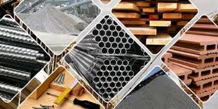
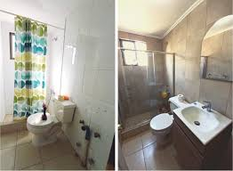

Fundación
La empresa de construcción fue fundada en el año 2020.
Inicios
Comenzamos realizando pequeñas reformas y remodelaciones en viviendas locales, destacándose por su atención al detalle y calidad en el trabajo.
Crecimiento
Con el tiempo, la reputación de "ArquiConstruck" creció y empezaron a trabajar en proyectos de mayor envergadura, como la construcción de edificios residenciales y comerciales.
Expansión
En 2022, la empresa se expandió a otras ciudades, abriendo nuevas oficinas y atrayendo a talentosos profesionales del sector de la construcción.
Reconocimientos
A lo largo de los 4 años, "ArquiConstruck" ha recibido varios premios por sus diseños innovadores y sostenibles, consolidándose como una empresa líder en el mercado de la construcción.
Qué servicios Ofrecemos
Proyectos
Buscar nuevos socios para seguir expandiendo
Crear nuevas oficinas para estar mas serca de nuetros clientes
Tener nuestra propia fabrica de Block y Procesamiento de Piedrin para facilitar las construciones
Algunos de Nuestros Proyectos Realizados
 Comentarios
La relación con los encargados las obras fue cordial en todo momento, dando como resultado una obra con acabado satisfactorio.
Esta tienda tiene precios competitivos y productos de alta calidad! Realicé una comparación exhaustiva antes de comprar y encontré que esta tienda ofrecía el mejor valor por mi dinero.
El servicio al cliente de esta empresa es excepcional. Resolvieron rápidamente mi problema y fueron amables y atentos en todo momento. ¡Gracias por una gran experiencia